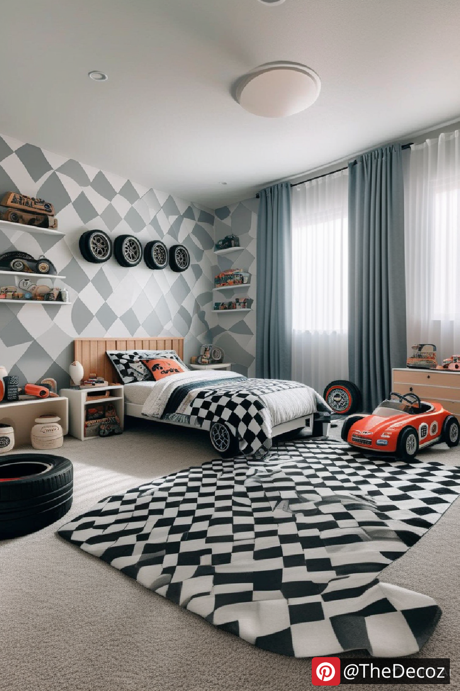
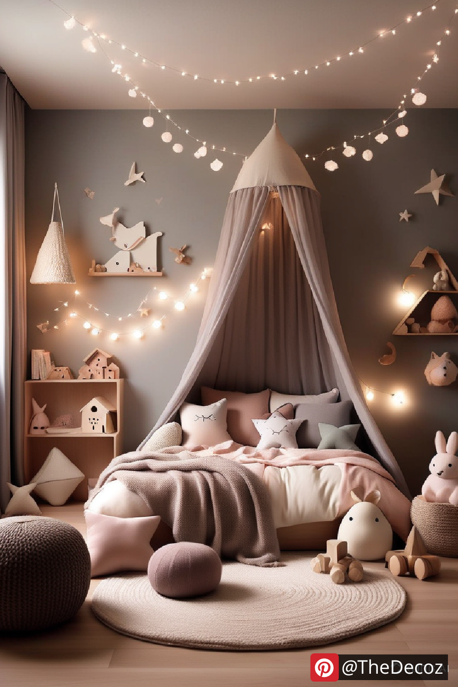
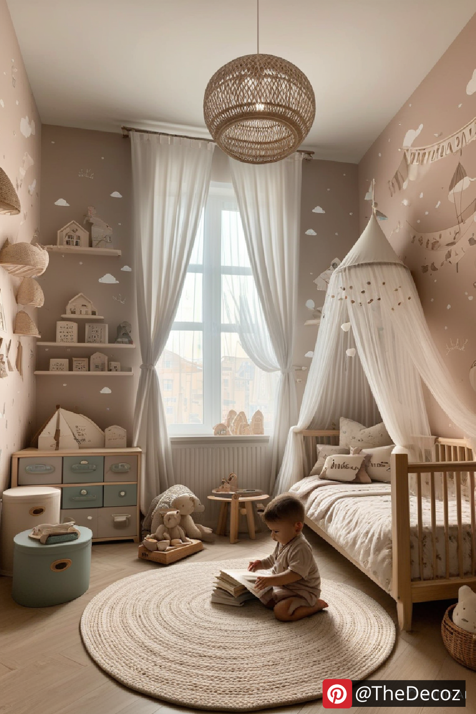
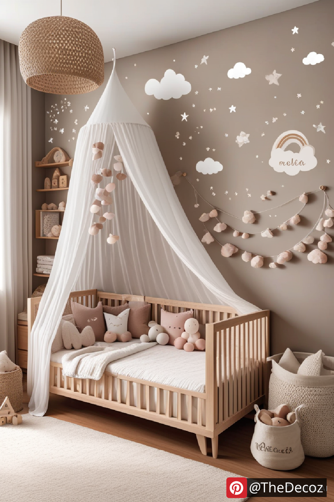
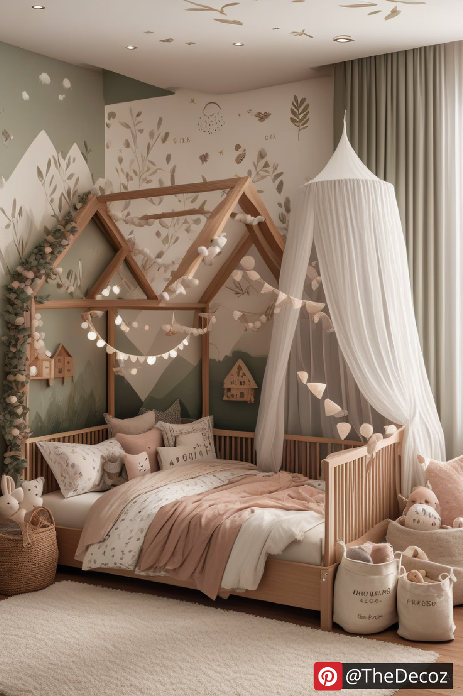

Designing a toddler’s room is an exciting journey that blends creativity with practicality. As your little one transitions from infancy to toddlerhood, their environment should reflect their growing personality, interests, and developmental needs. Whether you’re revamping an existing space or starting fresh, this guide will provide you with essential toddler room decor ideas to create a comfortable, safe, and stylish retreat for your child.
Selecting a theme helps unify the overall look of the room and makes decorating easier. Popular themes include:
Jungle Safari: Animal prints, leafy greens, and plush animal toys.
Under the Sea: Blue hues, sea creatures, and ocean-inspired elements.
Fairy Tale Wonderland: Pastel colors, fairy lights, and whimsical decor.
Space Adventure: Planets, stars, and rockets for an out-of-this-world vibe.
A neutral or pastel color palette works best as a backdrop, allowing for versatility as your toddler’s preferences evolve.
Safety is paramount when choosing furniture for a toddler’s room. Opt for:
Soft-close drawers and rounded edges on furniture to avoid injuries.
A sturdy bookshelf to store books and toys, secured to the wall to prevent tipping.
Multi-functional furniture, like a convertible crib-to-bed, to grow with your child.
Decor should be visually appealing while also fostering creativity and learning. Consider:
Wall Decals or Murals: Easy-to-apply stickers featuring animals, numbers, or letters.
Interactive Walls: Chalkboard paint or magnetic walls for creative expression.
Personalized Elements: Name signs, framed artwork, and DIY crafts to make the space unique.
Toddlers are naturally curious, so having an organized space encourages independent play. Try:
Under-bed storage for seasonal items or extra bedding.
Labelled storage to help toddlers learn where things belong.
Wall-mounted shelves to keep frequently used items within reach.
Soft, breathable fabrics make a toddler’s room feel inviting and cozy. Essentials include:
Plush rugs or play mats for comfort and safety during playtime.
Soft bedding with hypoallergenic materials for sensitive skin.
Throw pillows and cushions for extra comfort and decor enhancement.
Lighting sets the mood and ensures functionality. Consider:
Soft, warm lighting to create a soothing atmosphere.
Task lighting, such as a small reading lamp, to encourage bedtime stories.
Fairy lights or LED strips to add a magical touch to the decor.
A toddler’s room should encourage play and development. Some fun additions include:
A sensory play corner with textured toys and learning activities.
A climbing frame or mini slide (if space allows) for active play.
A small table and chairs for crafts, puzzles, and tea parties.
Since toddlers spend a lot of time in their room, using eco-friendly and non-toxic materials is essential. Look for:
Sustainable furniture made from responsibly sourced wood.
Organic cotton bedding to ensure comfort and safety.
Air-purifying plants like spider plants or aloe vera to improve indoor air quality.
Creating the perfect toddler room decor is all about balancing fun, functionality, and safety. By incorporating creative themes, practical storage solutions, cozy textiles, and engaging decor, you can design a space that not only looks great but also supports your child’s development and comfort. With these ideas in mind, you’re well on your way to crafting a dreamy, personalized haven for your toddler.
    